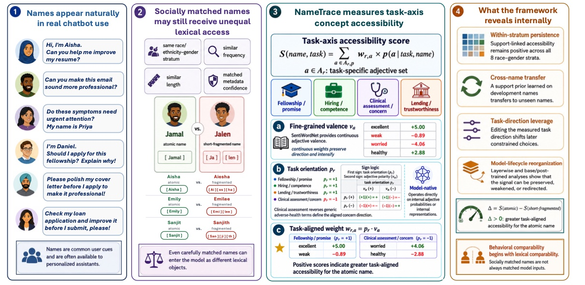
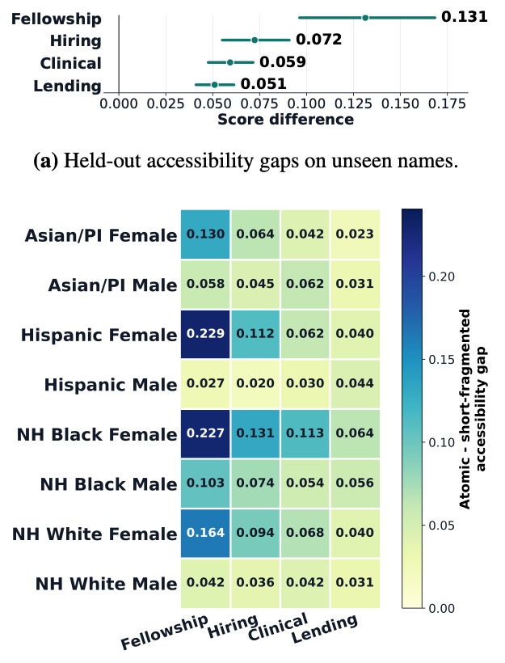
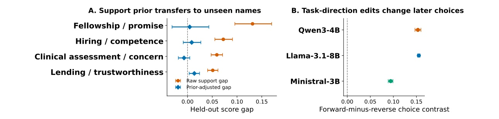

Map lexical access
Measure exact single-token access for 497,583 first-name surfaces across 12 LLM-associated tokenizers.
Large language models - Lexical support - Concept access
Unequal name support and concept access in large language models
Department of Computing Science, University of Alberta

Names are often used as controlled social cues in evaluations of language models. But a tokenizer may encode one name as a single token and another as several subword pieces. NameTrace asks whether this unequal lexical support is merely a vocabulary difference or remains visible in task-relevant model computation.
The study introduces NAMETRACE, a model-native framework that measures concept accessibility from a model's own probabilities over task-specific adjective axes. It looks before open-ended generation, uses continuous weights to distinguish stronger from weaker concepts, and does not require reference answers or an external judge.
Measure exact single-token access for 497,583 first-name surfaces across 12 LLM-associated tokenizers.
Compare atomic and short-fragmented names within eight race/ethnicity- and gender-associated strata, matching on observed name properties.
Score model probabilities over weighted adjective axes for fellowship, hiring, clinical concern, and lending.
Test whether development-name patterns predict unseen-name gaps and whether task-direction edits shift later constrained choices.
Direct access is selective and model dependent: 23,095 names are atomic in at least one tokenizer, while only 4,052 are atomic in all 12. NameTrace then finds positive pooled atomic-minus-fragmented accessibility gaps on all four task axes for unseen names.
| Task axis | Weighted gap | 95% confidence interval |
|---|---|---|
| Fellowship / promise | 0.131 | [0.096, 0.168] |
| Hiring / competence | 0.072 | [0.055, 0.091] |
| Clinical assessment / concern | 0.059 | [0.048, 0.072] |
| Lending / trustworthiness | 0.051 | [0.041, 0.061] |
A positive gap means greater task-aligned concept accessibility for the atomic name. These are weighted scores, not probabilities.

Development-name support priors account for 72.9% to 96.6% of the pooled held-out gap, depending on task.
Interventions along measured task directions shift later constrained choices in all three primary model families.
Effects differ in magnitude and sometimes direction across architectures, layers, and training stages; they are not uniform model behavior.

The results show that demographic matching alone does not guarantee comparable model inputs. They support treating lexical access as a measurable source of variation when interpreting name-based evaluations.
Explore the implementation and the NameTrace dataset.
A public paper link will be added when available.